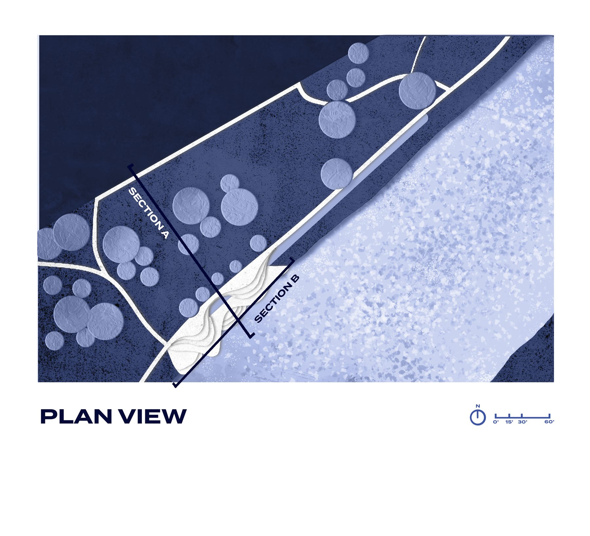
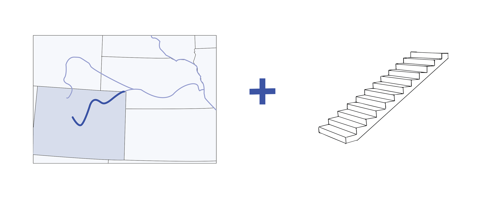
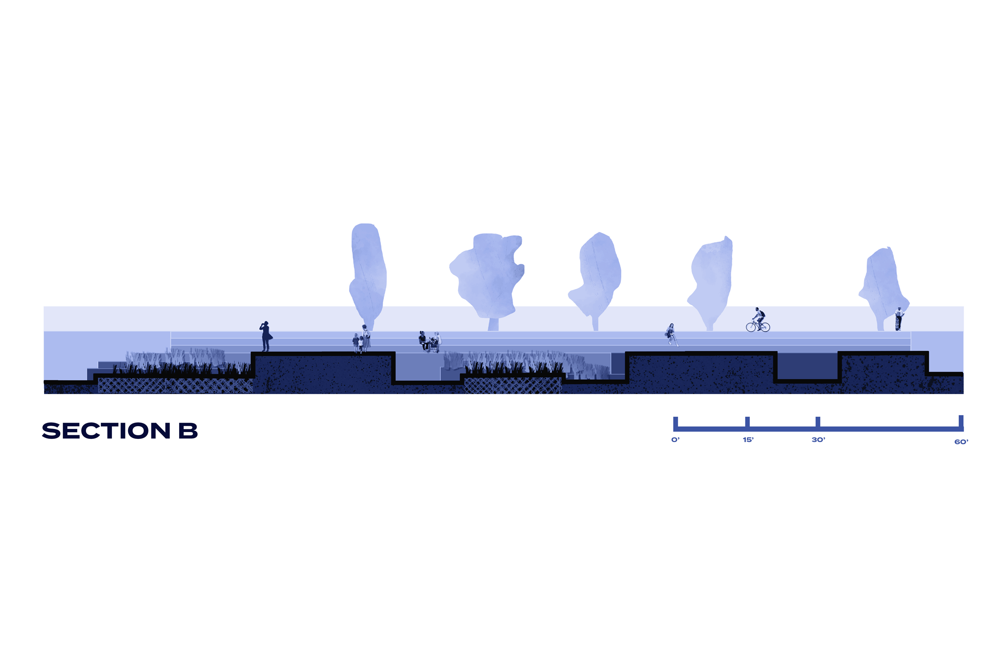
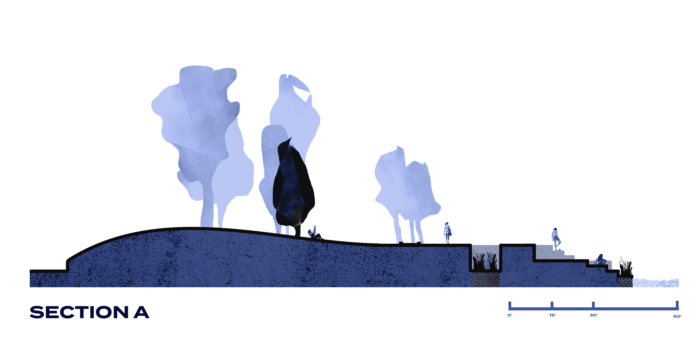

Project Two
Prompting Ecosystem Education
Located at the edge of Fishback Park along the South Platte River in Downtown Denver, this hypothetical project invites users of the surrounding park to acknowledge the interconnected ecosystems of their watershed by traversing an interactive map of the river. In addition to its opportunities for exploration, rest, and gathering, the intervention is designed to collect runoff water into bioswales and filter it before it reaches the waterway.

Description
Project Overview
Located at the edge of Fishback Park along the South Platte River in Downtown Denver, this hypothetical project invites users of the surrounding park to acknowledge the interconnected ecosystems of their watershed by traversing an interactive map of the river. In addition to its opportunities for exploration, rest, and gathering, the intervention is designed to collect runoff water into bioswales and filter it before it reaches the waterway.
Full Gallery
Images



